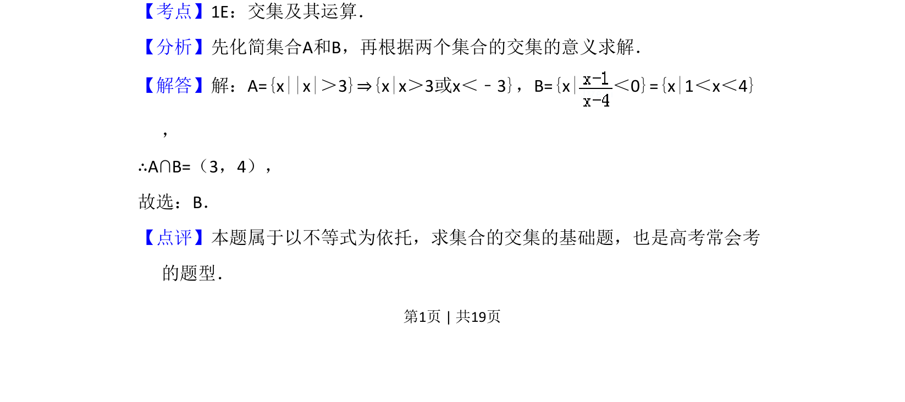

考点：集合运算 绝对值不等式 分式不等式
本题通过绝对值不等式与分式不等式求集合的交集，属于基础运算题。

📄 原 PDF 第 1 页：
素材/真题/吉林/2008-2024·（吉林）数学高考真题/2009年高考数学试卷（理）（全国卷Ⅱ）（解析卷）.pdf
2．（5分）设集合A={x||x|＞3}，B={x|＜0}，则A∩B=（ ） A．φB．（3，4）C．（﹣2，1）D．（4，+∞）
【考点】1E：交集及其运算．菁优网版权所有 【分析】先化简集合A和B，再根据两个集合的交集的意义求解． 【解答】解：A={x||x|＞3}⇒{x|x＞3或x＜﹣3}，B={x|＜0}={x|1＜x＜4} ， ∴A∩B=（3，4）， 故选：B． 【点评】本题属于以不等式为依托，求集合的交集的基础题，也是高考常会考 的题型．